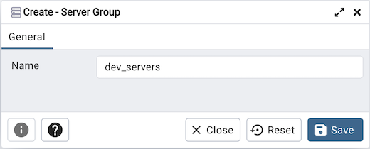

Server Group Dialog¶
Use the Server Group dialog to add a new server group. Assign servers to server groups to simplify management of multiple servers. Server groups are displayed as part of the pgAdmin tree control.
Use the Name field on the Server Group dialog to specify a name that will identify the server group in the pgAdmin tree control.
Click the Save button to save work.
Click the Close button to exit without saving work.
Click the Reset button to restore configuration parameters.
To create server connections in a server group, right click on the named server group and select the Create option to open the Create - Server dialog.